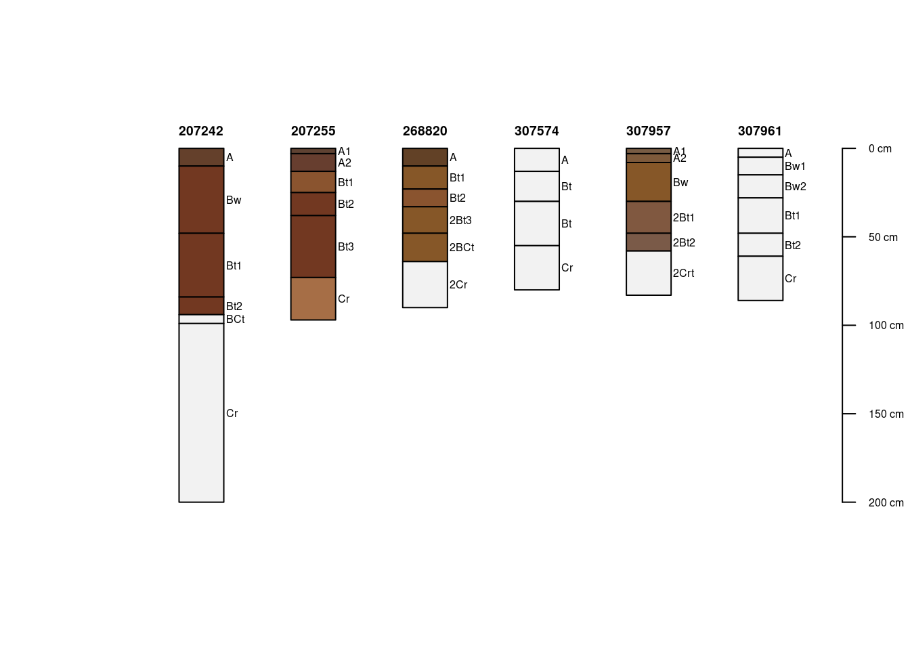
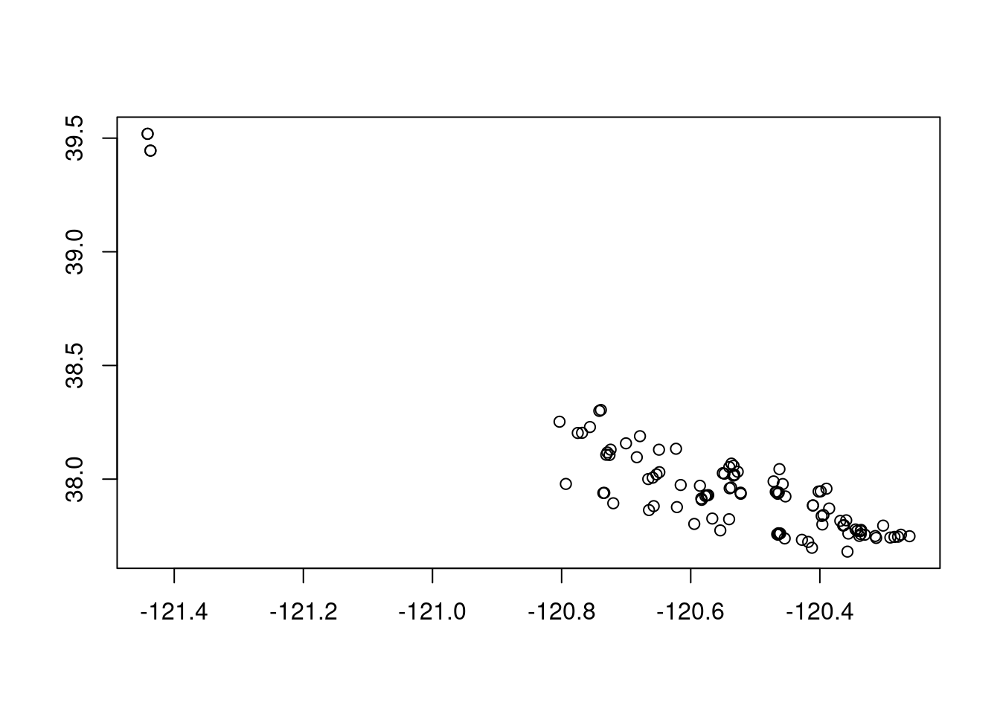
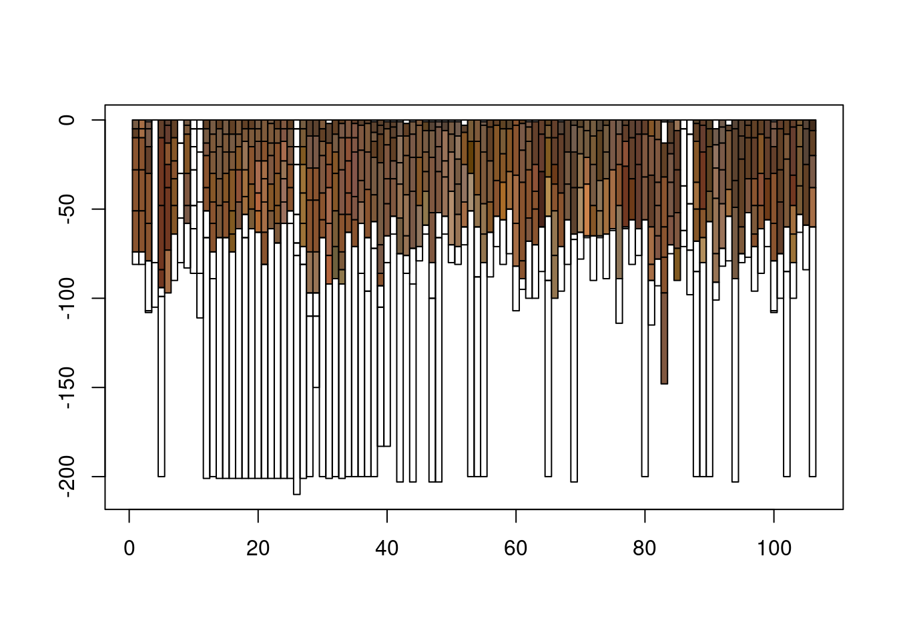
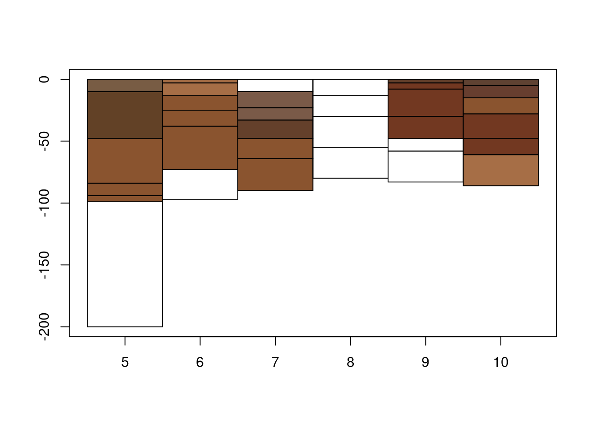
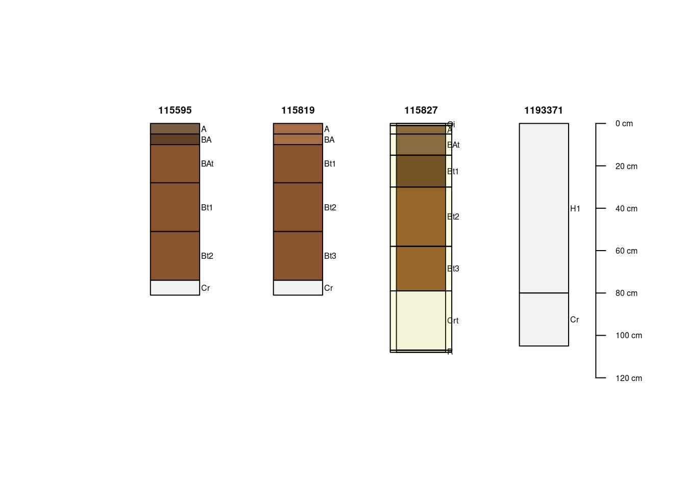

soilvctrs
soilvctrs is an experimental R package to abstract geometric operations on stratified environmental data such as soil profile descriptions. Under the hood, soilvctrs uses vctrs for managing S3 class representations and data in an efficient vector based format. The primary goal of this package is to demonstrate concise soil-themed classes that “just work” with tidyverse principles. Since dplyr 1.0.0, vctrs is a main workhorse package in the tidyverse metapackage “ecosystem.”
The current soilvctrs implementation represents parts of soil descriptions as S3 vctrs::rcrd objects: soil_layer and soil_profile.
The beauty of record-style vectors is that despite supporting arbitrary hierarchical complexity they are able to be manipulated like any vector; notably: added as non-atomic columns in tibble and data.frame objects. soil_profile instances contain a vctrs::list_of soil_layer in accessible in $profile with length zero or more. The soil_layer and soil_profile are comprised of vector “fields” of length equal to number of horizons (in a profile) or number of profiles. geom fields are defined at both profile and layer levels.
What has changed about soilvctrs most recently is that the geometry vectors that we were using from the geovctrs package by paleolimbot have been moved to the wk package. Some of the code in soilvctrs needs to be re-factored, but the changes are very minor. I have not yet published changes because I am re-evaluating certain structural aspects of the soilvctrs model; such as the vctrs::list_of for layers. While cool, it poses some limitations with larger data sets.
Use of nested record objects containing geometry fields and the ability to directly manipulate geometric elements outside of a graphics device has exciting (still theoretical) implications for interactive profile plots, 2-dimensional profile descriptions and new algorithm design. In the former cases – graphics or summaries involving a small number of profiles – performance for large collections should not be a major concern.
Here is a quick demonstration of incorporating wk vectors for geometric and graphical operations. I use the SoilProfileCollection loafercreek from the soilDB package for source data. I demonstrate a couple simple vector operations and allude to how they can be used for interactive/dynamic profile plots.
# get these off github
# remotes::install_github(c('paleolimbot/wk',
# 'ncss-tech/aqp',
# 'ncss-tech/soilDB'))
library(vctrs)
library(bench)
library(wk)
library(aqp, warn.conflicts = FALSE)## This is aqp 1.25library(soilDB)
# get loafercreek data from soilDB (only thing we are using from there)
data(loafercreek, package='soilDB')
# add the wk_xy to the site table as a column
loafercreek_xy <- as_xy(site(loafercreek)[,c('x','y')])
site(loafercreek)$wk_pnt <- loafercreek_xy
# make a rectangle for each horizons -- using no lists or iterations [fast]
make_hz_wk_rct <- function(p) {
h <- horizons(p)
hzd <- horizonDepths(p)
i <- as.integer(as.factor(h[[idname(p)]]))
rct_df <- data.frame(xmin = i - 0.5,
ymin = -h[[hzd[1]]], # horizon top depth is -Z (Y)
xmax = i + 0.5,
ymax = -h[[hzd[2]]])
return(as_rct(rct_df))
}
# add <wk_rct> to the horizon table [fast]
bench_time(loafercreek$wk_rct_hz <- make_hz_wk_rct(loafercreek))## process real
## 1.39ms 1.39mshead(horizons(loafercreek)[,c("phiid", "wk_rct_hz")])## phiid wk_rct_hz
## 1 579662 [0.5 0 1.5 -5]
## 2 579661 [0.5 -5 1.5 -10]
## 3 579660 [0.5 -10 1.5 -28]
## 4 579659 [0.5 -28 1.5 -51]
## 5 579658 [0.5 -51 1.5 -74]
## 6 579657 [0.5 -74 1.5 -81]# aqp plot method [fancy, many options]
bench_time(plot(loafercreek[5:10,], axis.line.offset = -0.5))
## process real
## 61ms 61.1ms# geometric vectors have basic plot methods
bench_time(plot(loafercreek$wk_pnt))
## process real
## 57.7ms 57.8ms# all loafercreek horizon rcts
bench_time(plot(loafercreek$wk_rct_hz, col = loafercreek$soil_color))
## process real
## 47.2ms 47.7ms# a few profiles of loafercreek horizon geometry
plot(loafercreek[5:10,]$wk_rct_hz, col = loafercreek$soil_color)
# basic width-scaling function for horizon wk_rct plots [fast]
# assumes 1 profile = 1 unit in width (X) dimension
scale_rct_width <- function(x, fct = 0.5) {
i <- 1:length(x)
x <- unclass(x)
mid <- (x$xmin + x$xmax) / 2
x$xmin <- mid - 0.5*fct
x$xmax <- mid + 0.5*fct
new_wk_rct(x)
}
# scale a subset
scl.loaf <- loafercreek[5:10,]
bench_time(scl.loaf$wk_rct_hz <- scale_rct_width(scl.loaf$wk_rct_hz))## process real
## 168µs 170µs# first 10 loafercreek horizon geometry [now less cluttered]
plot(scl.loaf$wk_rct_hz, col = loafercreek[5:10,]$soil_color)
pad_rct <- function(x, xpad = 0, ypad = 0) {
i <- 1:length(x)
x <- unclass(x)
# NB: negative Y == depth
x$xmin <- x$xmin - xpad
x$ymin <- x$ymin + ypad
x$xmax <- x$xmax + xpad
x$ymax <- x$ymax - ypad
new_wk_rct(x)
}
combine_rct <- function(x, xpad = 0, ypad = 0) {
i <- 1:length(x)
x <- unclass(x)
# NB: negative Y == depth
x$xmin <- min(x$xmin)
x$ymin <- -min(-x$ymin)
x$xmax <- max(x$xmax)
x$ymax <- -max(-x$ymax)
new_wk_rct(x)
}
# "highlight" #6 profile's 4th horizon by "combining" rct geometry and over-plotting
plot(scl.loaf$wk_rct_hz, col = scl.loaf$soil_color)
# draw border
border_p <- pad_rct(combine_rct(scale_rct_width(loafercreek[6,]$wk_rct_hz)),
xpad = 0.1, ypad=5)
plot(border_p, add = T, lwd=2)
# highlight horizon
highlight_hz <- scale_rct_width(loafercreek[6,4]$wk_rct_hz)
plot(pad_rct(highlight_hz, xpad = 0.05, ypad=2.5),
add = T, col = rgb(1,1,0,0.666))
# redraw lines
plot(scl.loaf$wk_rct_hz, add = T)
# overplotting on aqp::plotSPC base requires inversion of the Y axis
invert_y_rct <- function(x) {
i <- 1:length(x)
x <- unclass(x)
# NB: negative Y == depth
x$ymin <- -x$ymin
x$ymax <- -x$ymax
new_wk_rct(x)
}
plotSPC(loafercreek[1:4,])
plot(invert_y_rct(scale_rct_width(loafercreek[3,]$wk_rct_hz)), add = T, col=rgb(1,1,0,0.111))
Note: if this style of geometry were to be incorporated in the SoilProfileCollection the constructor would probably need to rebuild geometry (x axis) on [ extraction, complicating the “simple” indexing above where rectangles are handled independently of the object. That is loafercreek[3,] would have xmin=0.5, xmax=1.5, not 2.5 and 3.5, because it contains one profile. For now it may make most sense for these geometry operations to be kept independent of the object, especially since creating the vectors from a raw data.frame is so “cheap.”